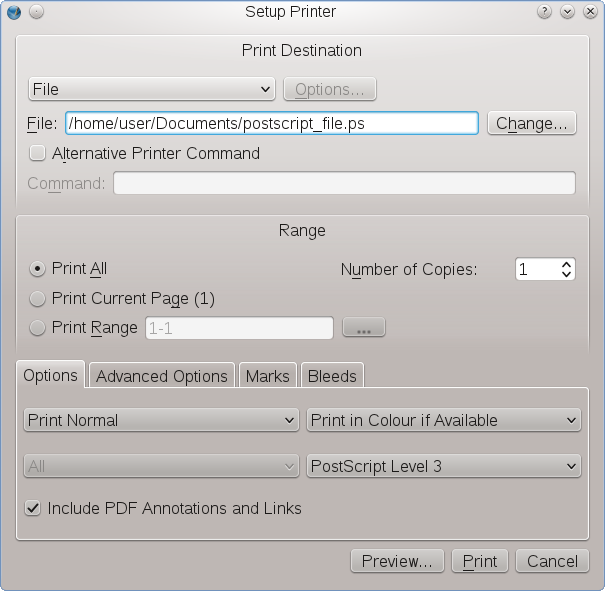

If your printing device and your operating system’s printing subsystem support direct printing from within Scribus, especially if the device is a PostScript printer, Scribus offers some extra printing features not available in most other programs. It’s important to note (again) that the availability of those features depends on the quality of the device driver. Moreover, at least on Windows, where Scribus uses the “Graphical Device Interface” it also depends on the features that have been made accessible through the device driver by the manufacturer. For reasons of usability, the number of options may have been consciously limited on this operating system. Below we will describe the Print Dialog for operating systems that use the CUPS printing system (Linux, *BSD, UNIX, Mac OS X).
|  |
The first thing you have to decide here is whether you actually want to print on paper (or a similar physical material) or “print” to a file, i.e., create a PostScript file, which can be later transferred to a commercial printer who can’t handle PDFs. If no printer driver is installed, creating a PostScript file will be your only option.
The checkbox “Alternative Printer Command” is only important on Linux and UNIX systems. One example for its applicability is the use of a specific “printing” dialog in a particular desktop environment, since such a dialog may provide additional features (like Ghostscript-based PDF export) or a reduced feature set, which can make it easier for average users to print directly from within Scribus.
As has been mentioned above, operating systems that use CUPS (Common UNIX Printing System) for printing, usually provide access to a lot of features in a printing device, many of which are only important for experts. As you can see in the screenshot below, these include ink color balance or the size of ink drops. If you need a maximum of control over your local printer, you are advised to use a Gutenprint driver, provided there exists one for your device. Scribus directly supports Gutenprint driver features via CUPS.
|
The options in this part of the Print Dialog should be familiar to you, at least if you ever printed from a word processor.
It’s probably safe to say that most of the features in the lower part of the Print Dialog are only important to professional users, which in turn means that the “average” user can ignore them. It also means that we don’t have to explain them in detail here, as they are (or at least should be) obvious to professional users.